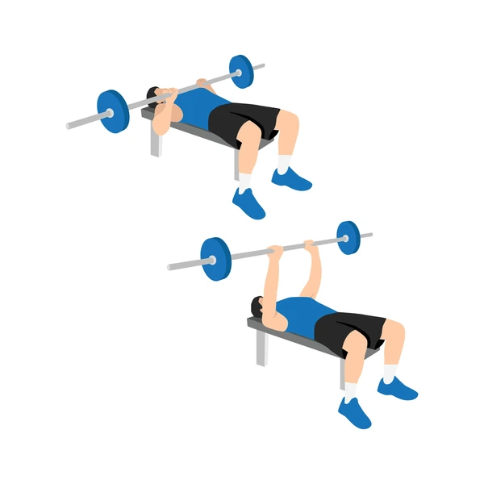

Exercise Description
Lie on a bench with a barbell, hands positioned closer than shoulder-width apart. Lower the barbell to your chest by bending your elbows, then press it back up to the starting position.
Reps and Sets
Beginners: 3 sets of 15-20 reps
Weights: 25-30kg
Rest time between each set: 45secs
Video Implementation